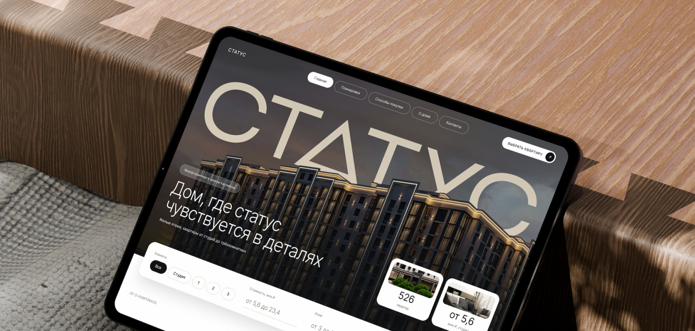
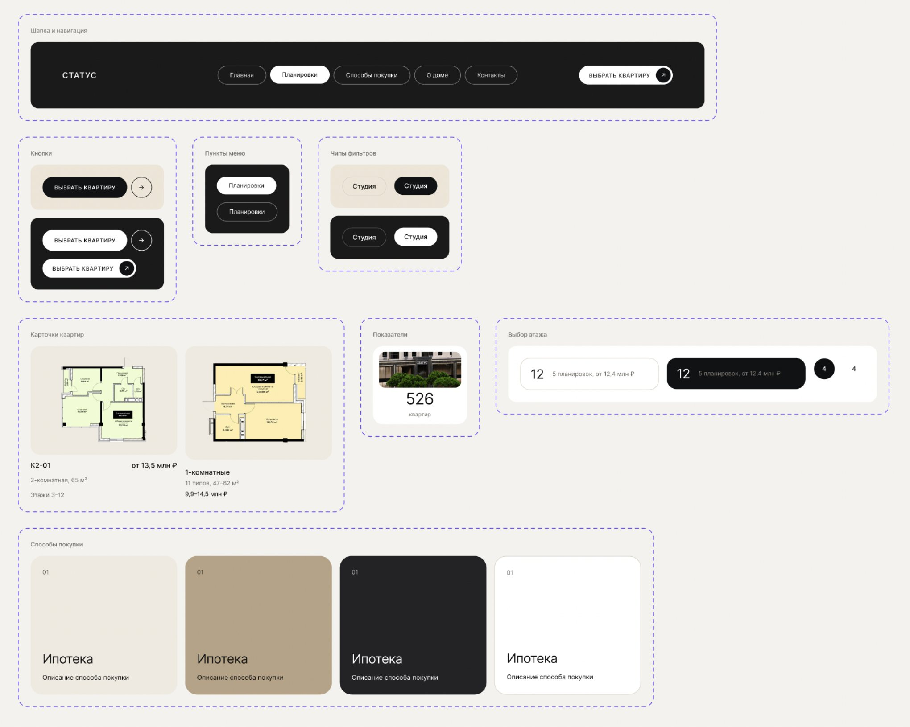
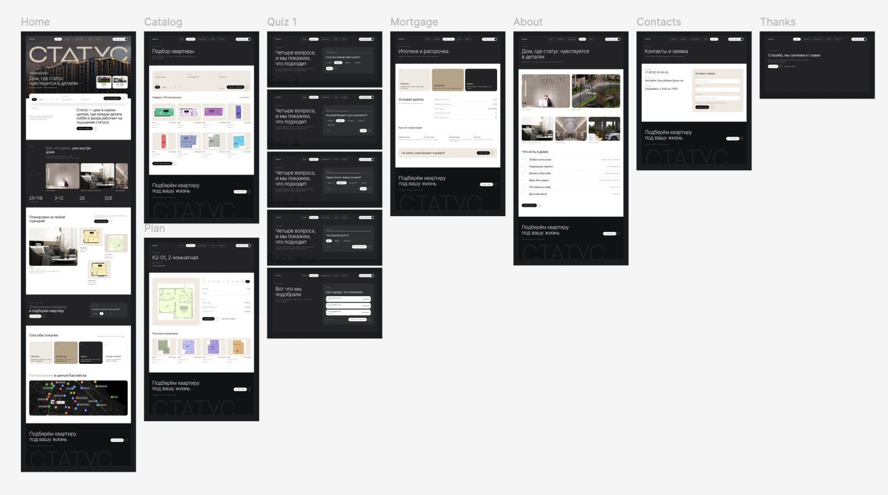
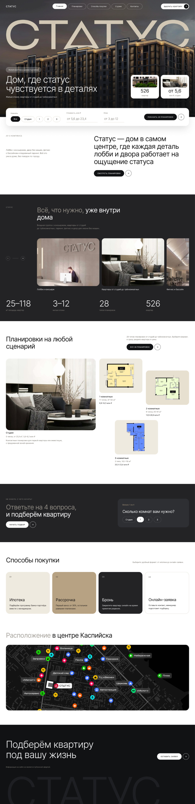

ЖК «Статус» — редизайн сайта выбора квартиры
Концепт сайта для жилого комплекса в Каспийске: каталог планировок, подбор квартиры за четыре вопроса и понятные способы покупки.
Тип проекта
Концепт редизайна сайта жилого комплекса
Моя роль
UX/UI-дизайнер: исследование, структура, дизайн-система, UI, прототип
Платформа
Web, desktop
О проекте
«Статус» — жилой комплекс в центре Каспийска: этажи 3–12, квартиры от студий до трёхкомнатных. Всё нужное для выбора лежит в буклете застройщика: планировки на одних страницах, цены на других, условия покупки на третьих. Я взяла этот материал и собрала из него сайт, на котором квартиру можно выбрать за несколько минут.
Проблема пользователя
Квартиру приходится искать по таблицам и PDF. Человеку нужно понять три вещи: что есть в доме, какая планировка подходит и сколько она стоит.
Задача
Дать два понятных пути к одной квартире: каталог с фильтрами для тех, кто знает, что ищет, и простой подбор для тех, кто не хочет разбираться в планах.
Бенчмарк
Прежде чем рисовать экраны, я разобрала сайты двух застройщиков: Level и Брусника. Смотрела не на оформление, а на путь к квартире: с чего он начинается, сколько шагов проходит человек и какие данные видит на каждом из них.
Из этих сайтов я взяла структуру: главная с подбором, каталог, карточка планировки, простой подбор, способы покупки, описание дома, расположение и контакты. Основной сценарий получился таким: главная, каталог или подбор, карточка планировки, бронь или заявка.
Ключевые решения
Для каждого решения я проверяла один вопрос: помогает ли оно быстрее дойти до подходящей планировки.
Два пути к одной квартире
Каталог с фильтрами для тех, кто знает, что ищет, и подбор из четырёх вопросов для тех, кто не хочет разбираться в планах. Идея подбора пришла из «Простого выбора» Брусники.
Способы покупки вместо калькулятора
Калькулятор платежа в месяц на первом шаге скорее отпугивает, чем помогает. Вместо него есть понятные способы покупки и менеджер, который подбирает программу вместе с клиентом.
Цена по способам оплаты
В карточке планировки видны базовая цена, цена при полной оплате и цена в рассрочку. Разницу видно сразу, без расчётов. Эту идею я взяла у Брусники.
Всё нужное в одной карточке
Площадь, этажи, цены и две кнопки, забронировать или задать вопрос менеджеру, собраны на одном экране, поэтому из карточки можно сразу перейти к заявке.
Дизайн-система
Цвет, типографика, отступы и радиусы заданы переменными, а компоненты собраны на автолейауте: шапка с состояниями активного пункта, карточка квартиры, карточка формата, пункты навигации, фильтры и шаги подбора. Все экраны собраны из этих компонентов, поэтому правка в одном месте меняет весь сайт.

Экраны

Главная
Первый экран показывает дом и сразу даёт параметры подбора: комнаты, стоимость и этаж. Ниже идут форматы квартир, быстрый подбор, способы покупки и расположение.
Каталог
28 типов планировок с фильтрами по стоимости, площади, этажу и количеству комнат. Переключатель «Списком» и «Простой выбор» ведёт в подбор.
Карточка планировки
Крупная планировка, выбор этажа, площадь и три цены. Рядом кнопки «Забронировать» и «Задать вопрос менеджеру», а ниже похожие планировки.
Простой выбор
Четыре вопроса с прогрессом, а в конце три подходящие планировки, переход к карточке и ссылка на весь каталог.
Способы покупки, о доме, расположение, контакты
Остальные экраны закрывают вопросы, которые возникают после выбора: как купить, что за дом, где он находится и как связаться с отделом продаж. Из любого места есть путь к заявке.

Итог
Получился кликабельный прототип в Figma: путь от главной до карточки планировки и заявки проходится без тупиков, а навигация работает на всех экранах. Бенчмарк дал структуру, а отказ от лишних шагов сделал путь короче. Дальше я бы проверила сценарии на людях: понимают ли они, чем подбор отличается от каталога, и доходят ли до заявки.